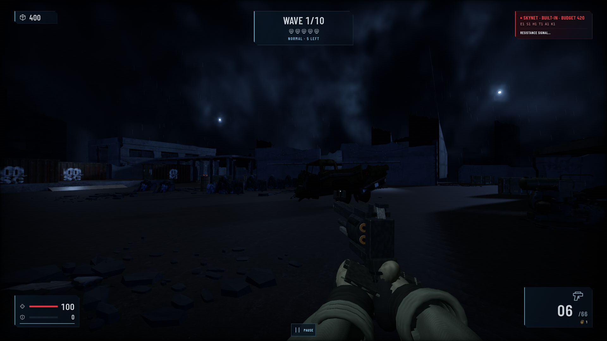
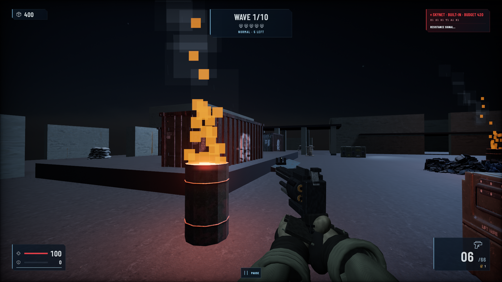
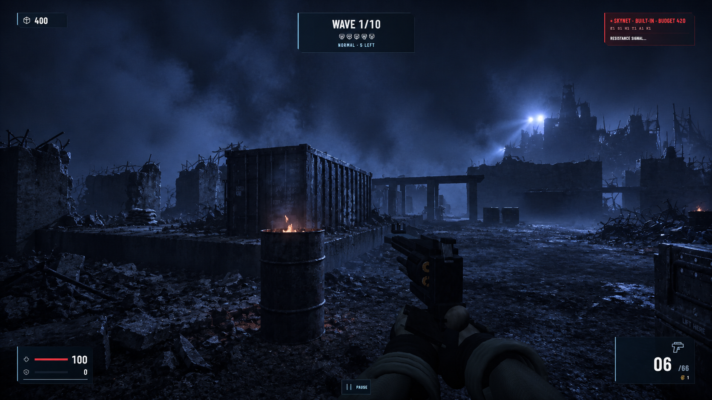
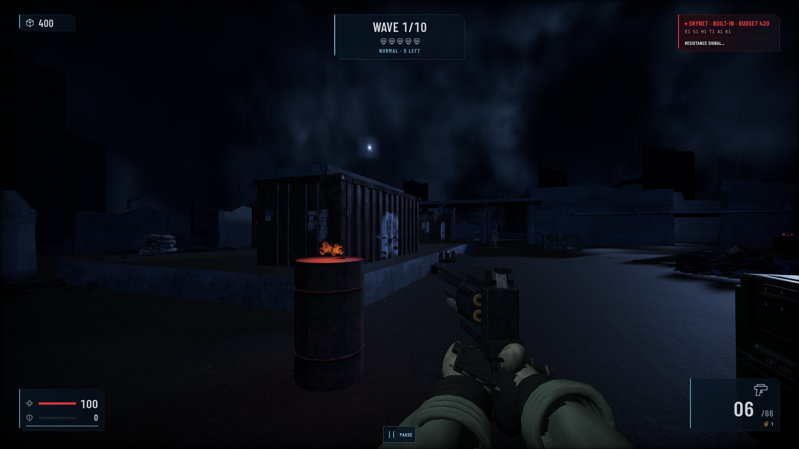
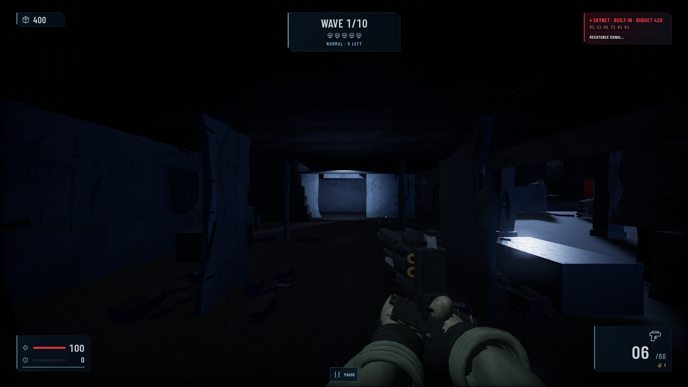
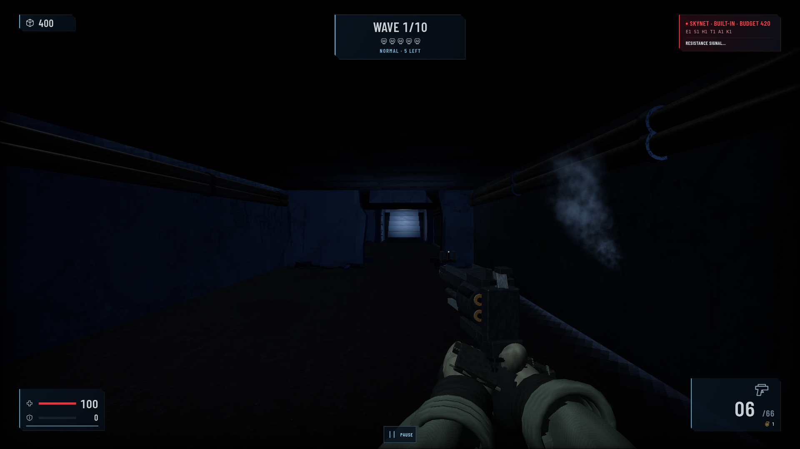
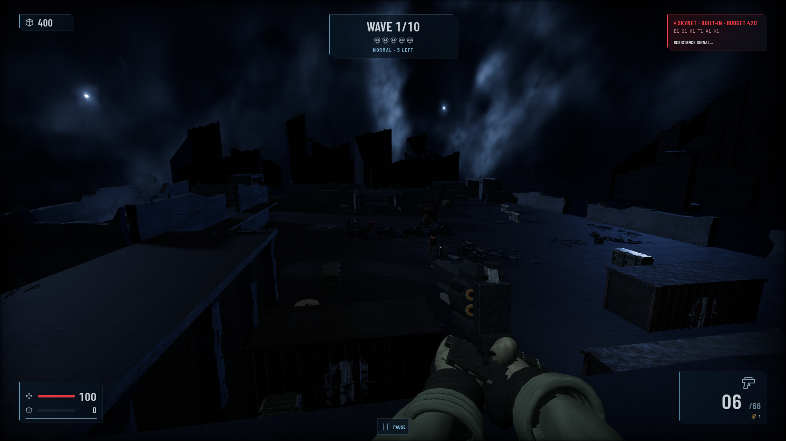

BeforeNew targetLatest progress
01-courtyard



02-cargo



03-barracks



04-service



05-rooftop



DIAGNOSTIC / Needs revision. No scene approval.
Capture date range (UTC): 2026-09-13T22:50:08+00:00 — 2026-09-13T22:52:02+00:00
Source PNG file modification times; capture manifest does not record acquisition timestamps.
Diagnostic base SHA (plus routed owner revisions below): cfdf6821e17869b16f492478ce6fe4cf82be1128
Capture source: v2-combined-r3-pilot-02
Gallery built: 2026-09-13T22:53:33+00:00
DIAGNOSTIC / Needs revision. Browser-routed module overrides; this is not a clean integrated scene commit. Independent review pending.
{
"base_commit": "cfdf6821e17869b16f492478ce6fe4cf82be1128",
"mode": "Diagnostic browser module overrides; Actual PlayerView; first-wave start held still; default map state; fixed presentation tick; no enemies advanced",
"owners": [
{
"owner": "architecture",
"commit": "99fe4b77363b5422f4c31d9320290c54aba2e57e",
"sourceFiles": {
"assets/v2/architecture/LICENSE.txt": "9000ef79bbd4e1ad058ccb5c88750520c99fd9b717406a33863cf102af59dff5",
"assets/v2/architecture/rubble-patches.json": "0d41a1f506c812ce9a1ee073c6f06c93537f40c081db38d6aaf8505b072e7077",
"lib/view/v2/architecture-bake.js": "7d9b0173dd9475c3a130b41f079848bc48e7f580c0898a1c3c2123eb82b30be4",
"lib/view/v2/architecture-layout.js": "eec54e2bb4be7b6987c9424475d51ad83484264a3cc9831417416b26e73f16c4",
"lib/view/v2/architecture-rubble.js": "72d90eeeea52170f8262c58a49aa7bd276dff23eb804cc7fd44a2c69dca8fe26",
"lib/view/v2/architecture-shells.js": "2ff892e3d7db9627f85512e9fe35769877954acf682effb293946761f4207616",
"lib/view/v2/architecture.js": "19ea99d69708ea6657969686a83cb8e13d9359f6d6939d7e3cdefbc08691853c"
}
},
{
"owner": "materials",
"commit": "4ad37bfc8a806bef8f2f9a46b48dcee129120123",
"sourceFiles": {
"assets/v2/materials/concrete-albedo.jpg": "136999c1feaf47cdfaec91e492522d7ceea653bba61ab2d903772c3025b60d40",
"assets/v2/materials/concrete-surface.png": "82c155c2e2c5b268cc32bcf4b994464e4564efca4da901c6a2a6cd1b4661fa57",
"assets/v2/materials/ground-albedo.jpg": "bb7888963f2134c5025bf056111cacb0d91b20af1837418a59dd2874c1d15682",
"assets/v2/materials/ground-surface.png": "412fcc8911ba038340f22916e8dbd0582c91d2ce77374f95dd83ba3626a91e78",
"assets/v2/materials/photo-leaking-LICENSE.txt": "799101068c143f87455bbda9e9482dcadd1b17cef6f06bff01850c8b4ebaa456",
"assets/v2/materials/photo-provenance.json": "950b1ed091f365f27d0b7a88a660cbf7311dea7f6b7c81c4fb9972f698dac3e8",
"assets/v2/materials/photo-worn-LICENSE.txt": "4358adca4c173de5717482607b3cd0e88ff33746bf97fb09be1ee98d0f658ec2",
"assets/v2/materials/photo-worn-albedo.jpg": "a7d583a3b1c5608fc04cf7d425ff6abeb6d82de8d62ccb1446af5f95ccfc86f1",
"assets/v2/materials/photo-worn-normal.png": "8de9fa5fa13f7520367129c796c55181c17ccd7e2d7f4bbdb30a8fba6482e392",
"assets/v2/materials/photo-worn-orm.png": "cf82a4dbd211d6b67967d43760a6cde27bd8eb74aa877de4b8fb96653a411894",
"assets/v2/materials/provenance.json": "b2a2268d7c338df3ce44baf88eed76119f6d683c1f361275e91b602fc0455cb5",
"lib/view/v2/materials-shader.js": "edfb0fad4c8c6f8c2ef34f131f80aa3a3fd3c05d6032abf19067b89dd1709728",
"lib/view/v2/materials-weathering.js": "e6d6ccf26a759cbfde6ff15cd4429cf1c9043aa71b87f00ed20b814d7f969838",
"lib/view/v2/materials.js": "d3f3cdbe7e342769ebe9cf28125ca50e1be226ed2c5d687f22b358eff55f637e"
}
},
{
"owner": "lighting",
"commit": "91974eb3eceed5b9bbf9c9a7a1c43a7893aa4285",
"sourceFiles": {
"lib/view/v2/lighting-noise.js": "01383dcc8576dc72b62d3fc958e65115b7310e17f3d77e0a40aabe58005d1d78",
"lib/view/v2/lighting.js": "de7e09c7b671a8a4fedab8d40a50610df517202f1559da7e11085531996fca6d"
}
}
],
"base_source_files": {
"assets/main.scene.gltf": "cc912950518e6712a00d3e735a7dca54b1ede6fdd54c88c9950347b9d86a3287",
"assets/v2/effects/particles.png": "c51d4f212ef0be4336b9321f7bc17416679bbe7f925a46d7d8b6ad602ede8fc9",
"assets/v2/effects/provenance.json": "2ec3364d98fa49c2aa8537709ea31a18bd63d658352a2a17536bb9735383750f",
"assets/v2/materials/concrete-albedo.jpg": "136999c1feaf47cdfaec91e492522d7ceea653bba61ab2d903772c3025b60d40",
"assets/v2/materials/concrete-surface.png": "82c155c2e2c5b268cc32bcf4b994464e4564efca4da901c6a2a6cd1b4661fa57",
"assets/v2/materials/ground-albedo.jpg": "bb7888963f2134c5025bf056111cacb0d91b20af1837418a59dd2874c1d15682",
"assets/v2/materials/ground-surface.png": "412fcc8911ba038340f22916e8dbd0582c91d2ce77374f95dd83ba3626a91e78",
"assets/v2/materials/provenance.json": "b2a2268d7c338df3ce44baf88eed76119f6d683c1f361275e91b602fc0455cb5",
"generators/v2-preview.js": "6b91cb58abb7b739ddb8a6f08b66b6ecbb4faf4c4045cd630a5ea18b99e98f4a",
"lib/view/map.js": "4531939174a06b43d81b47cbbbdced4ec54aa9004a0586f821f2bc9ddb1d43a7",
"lib/view/v2/architecture-layout.js": "eec54e2bb4be7b6987c9424475d51ad83484264a3cc9831417416b26e73f16c4",
"lib/view/v2/architecture.js": "1c39c5cd4597feffe4ffc455b69d8e3798c069ae7998a6f98c2424e7b346ebf3",
"lib/view/v2/effects-simulation.js": "6b00ad123c0209e823dc1f01d431242eadbf5b274973b268d6b89f8590ddc60c",
"lib/view/v2/effects-textures.js": "e84f88eb64206681207eb3d7ed4aaa07de15e8cd04b17a9cd1d2be38f875aed7",
"lib/view/v2/effects.js": "ae9601ca4f3ee4a69a07b1bb4b81158ba1caec167c56879d7cda14ae58385257",
"lib/view/v2/lighting-noise.js": "f9d6e4b5e46687667d9cffd6bc2df3ca0dff1fea07c4a372786ba4e761ec9d2b",
"lib/view/v2/lighting.js": "61214668919a2c027cb6b48a86411b642234571e376423567eb77b013f66d885",
"lib/view/v2/materials-shader.js": "256caf1a7980562484a8b4b36b7e8d693b895f8d9e33827352fe45d81bd3306f",
"lib/view/v2/materials-weathering.js": "a4bb5165cc52df12cb3b326a6a6ffb84e858804d10aa3a02098357e9b3896d00",
"lib/view/v2/materials.js": "5baff3e7fc86ec71bf257843291cdda8af5af68bb9fed7d7a3cf165f0619dd9e",
"main.js": "1ad1075417655a59138f08b8afa577076bd3556af41248ef005614111a6f77f6",
"package.json": "53bba145dd7cfe3eabf97a2f647235748727fb6a086483e64b0e6fd4612b76ca"
},
"harness_sources": {
"tools/capture-scene-targets.mjs": "e7408fb056cb029ad65f7cdba003f62edd6ccd7f7d2af7f6bfafd11bda382ed8",
"tools/v2/capture-browser.mjs": "cd4b99b8b610eff03de9b23ced57f39987e81a1033873e7b9fa0163ceccc683f",
"tools/v2/capture-gpu-timing.mjs": "b1af3d4cb6d1eba997bc60cc33bcb3db889391ccfbbba065ffb09957565dd35f",
"tools/v2/capture-pilot-overrides.mjs": "9a4d4036e34df46cac8e9bb26ec4ce180311ca74489b4518fd768a1fd837309c"
}
}Before is the original real Mac capture. New target is the immutable selected V2 generated reference. Latest progress is an actual Linux game capture. All five original player POVs; images copied byte-for-byte without edits. Strict camera/config/device/render and source-hash checks passed. Lower RGB MAE alone is not semantic success.







Image hashes and source provenance. Matched unchanged Linux baseline is retained as supporting evidence:
{kind=link}
{kind=link}
{kind=link}
{kind=link}
{kind=link}